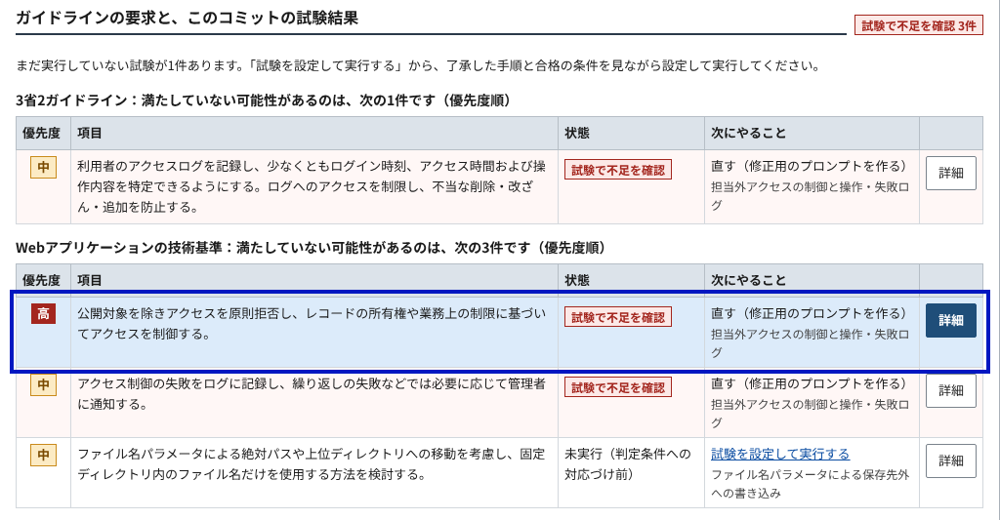

mugiurushi（麦漆）
医療システムの開発者が、ガイドラインの要件を、実際に動かす試験で確かめるための検証ツール
東京AIハッカソン 2026 一次審査
山下真凜
誰が：医療機関向けのシステムに新しく参入する開発者。
何に困るか：医療機関は採用時に、ガイドラインにどこまで対応しているかの説明を事業者に求める（サービス仕様適合開示書など）。新規参入者は、自分のコードのどこがどの要件に関わるかを示しにくい。
これで確かめられること：公開ガイドラインから出典つきで要件の候補を出し、開発者が選んだ要件を、対象を実際に動かして、選んだ観測の範囲で確かめる。適合・準拠の判定はしない。
1コードと説明
開発者
対象のコードとシステムの説明を入力する
2出典つきの候補
AI
取り込んだ公開文書18件から、関わりうる要件を出典つきで挙げる
3試験範囲を選ぶ
開発者
試験の案を読んで了承し、候補ごとに判定の条件を選ぶ
4実行して確かめる
実行・観測基盤（Rust）
対象を実際に起動し、出力・保存先・読み出しを観測して判定する
5修正の依頼
開発者が手元のAIへ
出典・判定の条件・結果・関係するコードを1つの依頼文にまとめる
代表例：担当外の職員に、患者のタスクが見えないか
- 出典
- OWASP Top 10:2025「公開対象を除きアクセスを原則拒否し、レコードの所有権や業務上の制限に基づいてアクセスを制御する。」
- 操作
- 職員nurse1が患者P001のタスクを追加し、別の職員nurse2で一覧を読み直す。
- 期待
- nurse2の一覧に、そのタスクが出ない。
- 結果
- 出た（期待と異なる）。同じ試験で、操作の記録が残るかも確かめ、記録は残っていなかった。
- 次
- 出典の抜粋・判定の条件・結果・関係するコードを、修正の依頼文にまとめた。修正と再試験はまだ行っていない。
この実行では、AIが出した要件の候補8件のうち、試験の観測に対応づけられたのは4件。代表例の試験1件を実行し、そこで確かめた3件はすべて期待と異なった（不足）。残る1件は試験を実行しておらず、合否に数えていない（未実行）。

結果の画面（同じ実行）。確かめた候補は「試験で不足を確認」、試験していない候補は「未実行」と表示する。
1課題
当事者と場面 医療機関向けシステムを新たに作る小規模事業者の開発者が、採用時にガイドライン対応の説明を求められる場面。
現在の対処と限界 ガイドラインを自分で読み、チェックリストに自己申告するか、専門家に依頼する。自己申告だけでは、動かして確かめた記録は残らない。
一次情報 作成者自身が開発者として、要件の把握と検証の負担を課題とした（2026年10月25日の発言をリポジトリに記録）。当事者への聞き取りの記録はこの資料には含めていない。
実際に扱う負担 公開文書の要件と、対象のアプリで確かめる操作・期待する結果・証拠を、開発者が自分で対応づける必要がある。
5実装
利用者と目的 医療システムの開発者が導入前に、選んだ要件の不足を確かめて直すため。
できていること 上の流れを、実際のAIと架空の診療所アプリの実際の起動で最後まで通した（作成者による実装検証）。
できていないこと 試験の案から試験の設定を自動で作ること。修正した版での再試験。
利用者による試用 記録はこの資料には含めていない。上の検証はすべて作成者による。
2技術の役割
AIが取り除く制約 専門知識と時間。公開文書から関わる要件を出典（文書・ページ・SHA-256）つきで挙げ、「何をして何を観測すれば確かめられるか」という試験の案に翻訳する。AIが無いと、これを人が要件ごとに行う。
任せる／任せない 任せる：候補、質問、試験の案、修正依頼の文。任せない：案の了承と判定の条件（開発者）、実行と判定（基盤）。合否の誤りは誤った説明につながり、再現性が要るため。
3社会的インパクト
影響が届く人 直接：医療情報システムを作る事業者の開発者（特に新規参入者）。間接：採用する医療機関の担当者と、記録される患者。
影響を与える仕組み 医療機関と事業者の間の、ガイドラインに基づく安全管理の説明と役割分担。新規参入者が根拠を持って説明できれば、医療機関の選択肢が広がる。
4持続性
回り続ける仕組み 公開リポジトリのオープンソースとして、作成者が個人で開発している。維持に要るのは、ガイドライン改訂時の文書の取り込み直し（取得日とSHA-256の記録は実装済み）と、利用者が自分のキーで払うAIの利用料（この実行では入力13,406・出力4,234トークン）。
裏付け 関係者の行動や約束による裏付けは、この資料には含めていない。
審査用の動作環境
①デモ動画（約3分・無編集、操作は自動、AIと試験の実行は実物）：共有URLは未発行（提出前に発行して記入する）
②この実行の記録：https://github.com/Suisan-neki/mugiurushi/blob/a6361bc/docs/validation-clinic-demo-video-2026-11-07.md
③手元で動かす手順（任意）：https://github.com/Suisan-neki/mugiurushi/blob/b6302a8/docs/judging.md